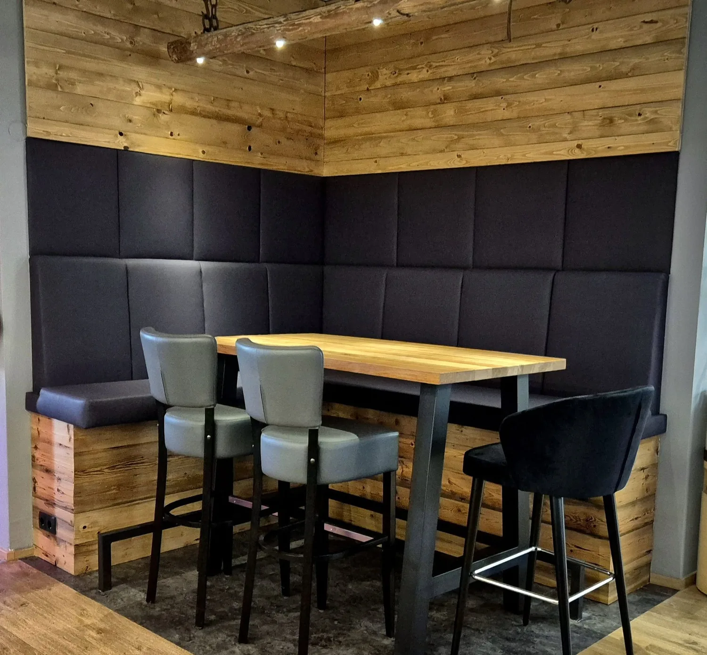

Ein Tisch, der erzählt
Der Chef's Table ist der besondere Platz im Haus. Eine eigene Ecke, gebaut aus dem Holz unserer eigenen Geschichte. Woher wir kommen, bleibt, auch wenn wir weitergehen.
Der Großvater von Martin Dorrer, Emmerich, hat hier sein Leben lang Landwirtschaft betrieben. Bauer durch und durch. Heute ist die Landwirtschaft verpachtet, aber was sie uns gegeben hat, ist geblieben. Und genau daraus ist etwas Neues entstanden.

Aus unserer Geschichte gebaut
In nur fünf Tagen ist dieser Raum entstanden. Nicht einfach neu gebaut, sondern aus dem gestaltet, was schon da war.
- Die Hängeleuchte war einmal ein Holzbalken, an dem früher die Rinder gebunden waren, mit denen die Felder gepflügt wurden. Ein Stück Vergangenheit, das heute über den Gästen leuchtet.
- Sitzbank und Wandverkleidung sind aus dem Holz einer alten Heutenne gefertigt. Nicht geschniegelt, nicht versteckt, nur gebürstet. So wie es ist.
- Gestaltet und umgesetzt von Markus Schaffer, DSM Schaffer aus Hitzendorf. Von der Idee bis zum fertigen Raum, alles aus einer Hand.
Ein Raum, der nicht laut ist
Aber einer, der erzählt. Von früher, von harter Arbeit, von echten Werten. Ein Stück Dorrer, gestern wie heute.
Den Chef's Table gern gleich als Wunsch angeben. So finden Sie uns